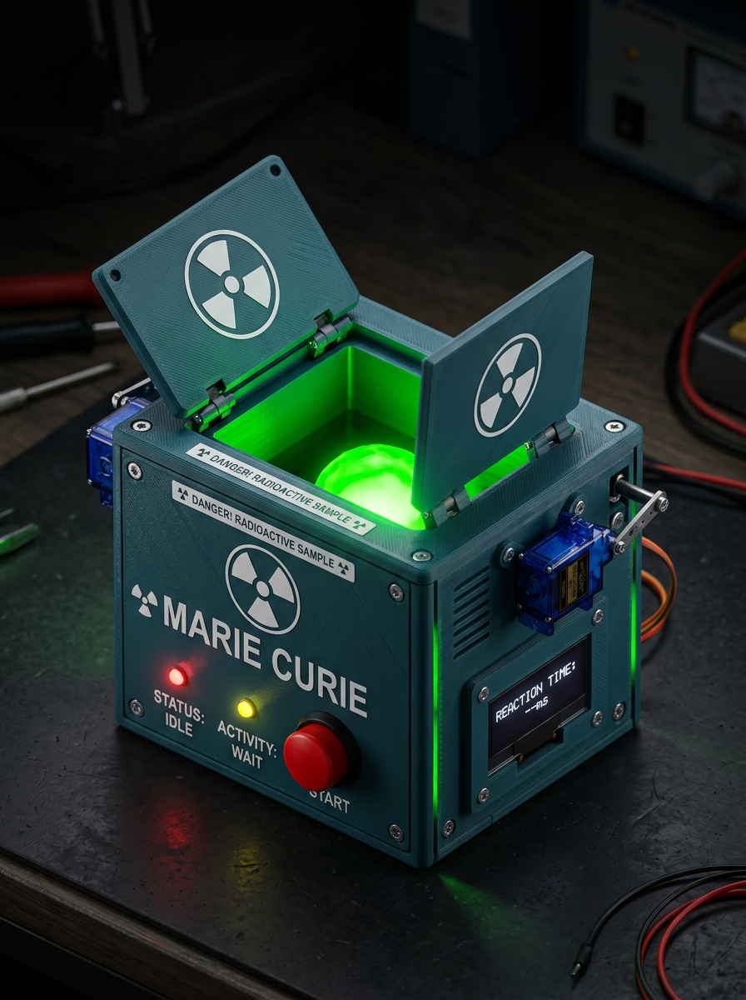
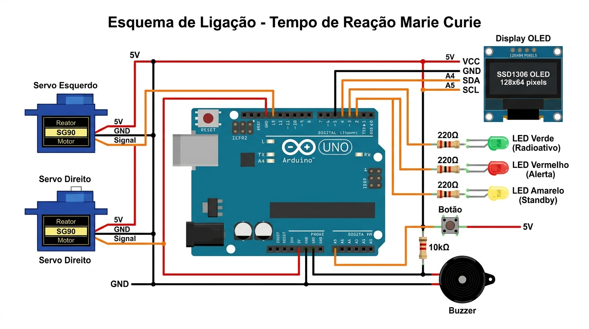

Sobre o Projeto

Este brinquedo educativo celebra Marie Curie, a primeira mulher a ganhar o Prêmio Nobel e pioneira nas pesquisas sobre radioatividade. A ideia é simples e genial: dentro de uma caixinha impressa em 3D há um LED verde brilhante que representa uma amostra radioativa (como Rádio ou Polônio, elementos descobertos por Marie Curie).
Duas portinhas controladas por servos SG90 guardam a "amostra". Em um momento aleatório, as portas se abrem e o usuário precisa pressionar o botão o mais rápido possível para "fechar a câmara de contenção" e "se proteger da radiação".
🎯 Conceito do Jogo
- Pressione o botão para iniciar
- Contagem regressiva: 3... 2... 1... JÁ!
- Aguarde em alerta (tempo aleatório de 2 a 7 segundos)
- As portas abrem e o LED verde acende
- Pressione o botão o mais rápido possível!
- Veja seu tempo de reação no display OLED
Lista de Materiais
Todos os componentes são facilmente encontrados em lojas de eletrônica ou online. Custo estimado: R$ 80 – R$ 140.
⚡ Eletrônica
🔩 Resistores e Passivos
🖨️ Impressão 3D
🔧 Ferramentas e Fixação
Esquema de Circuito

Esquema de ligação completo — clique para ampliar
📋 Tabela de Conexões Detalhada
| Componente | Pino/Terminal | Arduino Pino | Fio | Observação |
|---|---|---|---|---|
| Servo Esquerdo | Sinal (laranja) | D9 (PWM) | Laranja | Pino PWM obrigatório |
| Servo Esquerdo | VCC (vermelho) | 5V | Vermelho | Alimentação 5V |
| Servo Esquerdo | GND (marrom) | GND | Preto/Marrom | Terra comum |
| Servo Direito | Sinal (laranja) | D10 (PWM) | Laranja | Pino PWM obrigatório |
| Servo Direito | VCC (vermelho) | 5V | Vermelho | — |
| Servo Direito | GND (marrom) | GND | Preto/Marrom | — |
| LED Verde | Ânodo (+) | D6 → R220Ω | Verde | Resistor em série |
| LED Verde | Cátodo (–) | GND | Preto | Catodo = perna mais curta |
| LED Vermelho | Ânodo (+) | D7 → R220Ω | Vermelho | Resistor em série |
| LED Vermelho | Cátodo (–) | GND | Preto | — |
| LED Amarelo | Ânodo (+) | D8 → R220Ω | Amarelo | Resistor em série |
| LED Amarelo | Cátodo (–) | GND | Preto | — |
| Botão | Terminal 1 | D2 (INT0) | Laranja | Interrupção por hardware |
| Botão | Terminal 1 | 5V | Vermelho | Via resistor 10kΩ ao GND |
| Botão | Terminal 2 | GND | Preto | — |
| Buzzer Passivo | Pino positivo | D5 (PWM) | Laranja | Usar buzzer PASSIVO |
| Buzzer Passivo | Pino negativo | GND | Preto | — |
| OLED SSD1306 | VCC | 3.3V | Vermelho | Ou 5V se módulo suportar |
| OLED SSD1306 | GND | GND | Preto | — |
| OLED SSD1306 | SDA | A4 | Azul | I2C Data |
| OLED SSD1306 | SCL | A5 | Branco | I2C Clock |
Passo a Passo de Montagem
Instale as Bibliotecas no Arduino IDE
Abra o Arduino IDE → Sketch → Incluir Biblioteca → Gerenciar Bibliotecas. Instale: Adafruit SSD1306, Adafruit GFX Library. A biblioteca Servo.h já vem instalada por padrão.
Monte o circuito na protoboard
Siga o esquema de ligação e conecte todos os componentes na protoboard antes de instalar na caixa. Teste cada componente individualmente com sketches simples antes de unir tudo.
Imprima as peças 3D
Imprima a caixa, as portinhas e o suporte do LED. Use as configurações recomendadas na seção "Modelo 3D" deste tutorial. Remova os suportes com cuidado após o resfriamento.
Instale os servos na caixa
Fixe os servos SG90 nos encaixes laterais da caixa usando os parafusos M2×8mm. Os braços dos servos devem estar apontando para cima antes de conectar as portinhas.
Fixe o LED verde no suporte
Insira o LED verde 5mm no suporte impresso em 3D e use cola quente para fixar. Posicione o suporte no centro da caixa, direcionado para cima (para as portinhas). Conecte os fios antes de instalar definitivamente.
Instale o Arduino e a protoboard
Fixe o Arduino Uno e a protoboard no fundo da caixa usando fita dupla face ou parafusos M3. Organize os cabos para não interferirem no movimento dos servos.
Conecte as portinhas aos braços dos servos
Com as portinhas na posição fechada (90°), encaixe os braços dos servos nos furos das portinhas e fixe com parafusos M3×10mm. Certifique-se que as portas fecham simétricamente.
Instale o display OLED e os botões no painel frontal
Encaixe o display OLED na abertura frontal. Instale os LEDs vermelho e amarelo nos furos de 5mm. Fixe o botão principal de reação. Use cola quente para manter tudo no lugar.
Faça upload do código e teste
Conecte o Arduino ao computador, selecione a porta correta no Arduino IDE,
e faça upload do sketch tempo_reacao.ino. Abra o Monitor Serial (9600 baud) para ver os logs.
Calibre os ângulos dos servos
Use o sketch de calibração para ajustar os ângulos exatos de abertura e fechamento das portinhas. Veja a seção "Calibração" para mais detalhes.
Modelo 3D para Impressão
Os arquivos OpenSCAD (.scad) estão na pasta modelo_3d/. Abra no
OpenSCAD e exporte para STL.
100×80×60mm | ~60-80g PLA
44×55×2.5mm | Imprimir 2× | ~10g cada
Ø20×15mm | ~5g PLA branco
⚙️ Configurações de Impressão Recomendadas
📐 Dimensões das Peças
| Peça | Largura | Profundidade | Altura | Qtd. |
|---|---|---|---|---|
| Caixa Principal (externa) | 100mm | 80mm | 60mm | 1× |
| Caixa Principal (interna) | 94mm | 74mm | 57mm | — |
| Portinha | 44mm | 55mm | 2.5mm | 2× |
| Braço de conexão servo | 15mm | 8mm | 5mm | 2× |
| Suporte LED | Ø20mm | — | 15mm | 1× |
Código Arduino
O arquivo completo está em arduino/tempo_reacao.ino. Abaixo estão os trechos mais importantes explicados:
🔌 Configuração dos Pinos
// Pinos de saída (OUTPUT) #define PINO_SERVO_ESQ 9 // PWM - Servo esquerdo #define PINO_SERVO_DIR 10 // PWM - Servo direito #define PINO_LED_VERDE 6 // "Amostra radioativa" #define PINO_LED_VERMELHO 7 // Alerta de radiação #define PINO_LED_AMARELO 8 // Standby / aguardando #define PINO_BUZZER 5 // Buzzer passivo (PWM) // Pinos de entrada (INPUT) #define PINO_BOTAO 2 // INT0 - Interrupção de hardware // I2C para OLED // SDA = A4, SCL = A5 (fixos no Uno)
⚙️ Movimentação dos Servos
void abrirPortas() { // Abre gradualmente para efeito dramático for (int a = 0; a <= 90; a += 5) { servoEsquerdo.write(90 - a); // Vai de 90° → 0° servoDireito.write(90 + a); // Vai de 90° → 180° delay(15); // 15ms entre passos = abertura suave } // Resultado: portas abertas simétricamente } void fecharPortas() { for (int a = 90; a >= 0; a -= 5) { servoEsquerdo.write(90 - a); servoDireito.write(90 + a); delay(15); } }
⚡ Interrupção de Hardware (Medição Precisa)
// Variáveis voláteis (modificadas na ISR) volatile bool botaoFoiPressionado = false; volatile unsigned long tempoPressao = 0; void setup() { // Configura interrupção: chama isrBotao() em RISING edge attachInterrupt(digitalPinToInterrupt(PINO_BOTAO), isrBotao, RISING); } // ISR = Interrupt Service Routine (executa imediatamente) void isrBotao() { botaoFoiPressionado = true; tempoPressao = millis(); // Timestamp preciso do pressionamento } // Cálculo do tempo de reação: // tempoReacao = tempoPressao - tempoAbertura;
🎮 Máquina de Estados do Jogo
enum EstadoJogo { AGUARDANDO_INICIO, // LED amarelo piscando CONTAGEM_REGRESSIVA, // 3...2...1...JÁ! ESPERANDO_ALEATORIA, // Tempo aleatório 2–7 segundos PORTAS_ABERTAS, // LED verde aceso – REAGIR! BOTAO_PRESSIONADO, // Sucesso – exibe resultado MUITO_CEDO, // Pressionou antes de abrir TEMPO_ESGOTADO, // Não reagiu em 3 segundos MOSTRANDO_RESULTADO // Exibe pontuação e recorde };
arduino/tempo_reacao.ino neste projeto.
Abra com o Arduino IDE 2.x ou superior para melhor experiência.
Calibração dos Servos
Cada servo tem pequenas variações de fabricação. É necessário calibrar os ângulos exatos para que as portinhas fechem perfeitamente. Use o sketch de calibração abaixo:
// SKETCH DE CALIBRAÇÃO - Rode separadamente // Abra o Monitor Serial a 9600 baud // Digite ângulos para testar posições #include <Servo.h> Servo servoEsq, servoDir; void setup() { Serial.begin(9600); servoEsq.attach(9); servoDir.attach(10); // Posição inicial: tente 90° para ambos servoEsq.write(90); servoDir.write(90); Serial.println("Digite angulo (0-180) para testar:"); Serial.println("Ex: 'E45' = Esquerdo para 45 graus"); Serial.println("Ex: 'D135' = Direito para 135 graus"); } void loop() { if (Serial.available()) { String cmd = Serial.readStringUntil('\n'); char servo = cmd[0]; int angulo = cmd.substring(1).toInt(); if (servo == 'E') { servoEsq.write(angulo); } if (servo == 'D') { servoDir.write(angulo); } Serial.print("Servo "); Serial.print(servo); Serial.print(" = "); Serial.println(angulo); } }
📝 Anotações de Calibração
Servo Esquerdo (D9)
| Fechado | ___° (padrão: 90°) |
| Aberto | ___° (padrão: 0°) |
Anote os ângulos encontrados e atualize as constantes no código principal.
Servo Direito (D10)
| Fechado | ___° (padrão: 90°) |
| Aberto | ___° (padrão: 180°) |
Após calibrar, atualize SERVO_FECHADO_ESQ, SERVO_ABERTO_ESQ etc. no sketch.
Como Jogar e Interpretar Resultados
🎮 Fluxo de uma Partida
Pressione o botão vermelho para iniciar
O LED amarelo para de piscar. Contagem regressiva aparece no display.
Aguarde em alerta (2 a 7 segundos)
O tempo de espera é aleatório! Não tente prever. O LED vermelho fica aceso durante a espera.
⚡ As portas abrem e o LED verde acende!
Sons de alerta tocam no buzzer. Pressione o botão o mais rápido possível!
Veja seu resultado no display
Seu tempo de reação em milissegundos aparece no display junto com sua classificação e recorde atual.
🏆 Tabela de Classificação
🔧 Parâmetros Ajustáveis
| Constante | Valor Padrão | Descrição |
|---|---|---|
TEMPO_MIN_ESPERA | 2000ms | Mínimo de espera antes de abrir as portas |
TEMPO_MAX_ESPERA | 7000ms | Máximo de espera antes de abrir as portas |
TEMPO_EXPOSICAO | 3000ms | Tempo máximo com portas abertas antes de "contaminar" |
REACAO_EXCELENTE | 200ms | Limiar para classificação "EXCELENTE" |
REACAO_OTIMO | 300ms | Limiar para classificação "ÓTIMO" |
REACAO_BOM | 450ms | Limiar para classificação "BOM" |